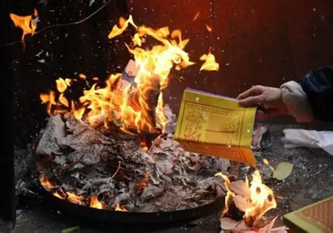
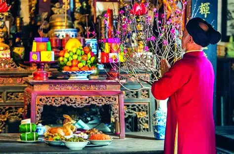
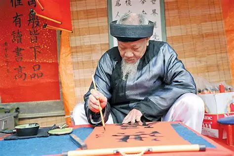
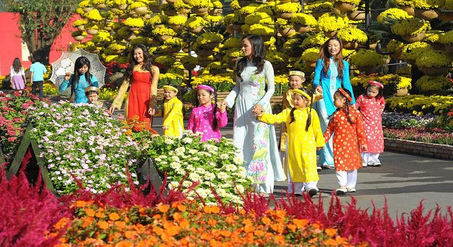
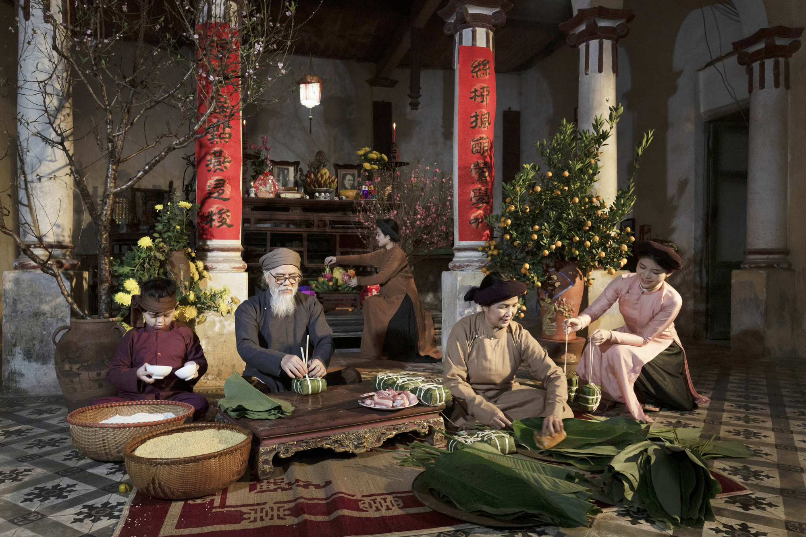
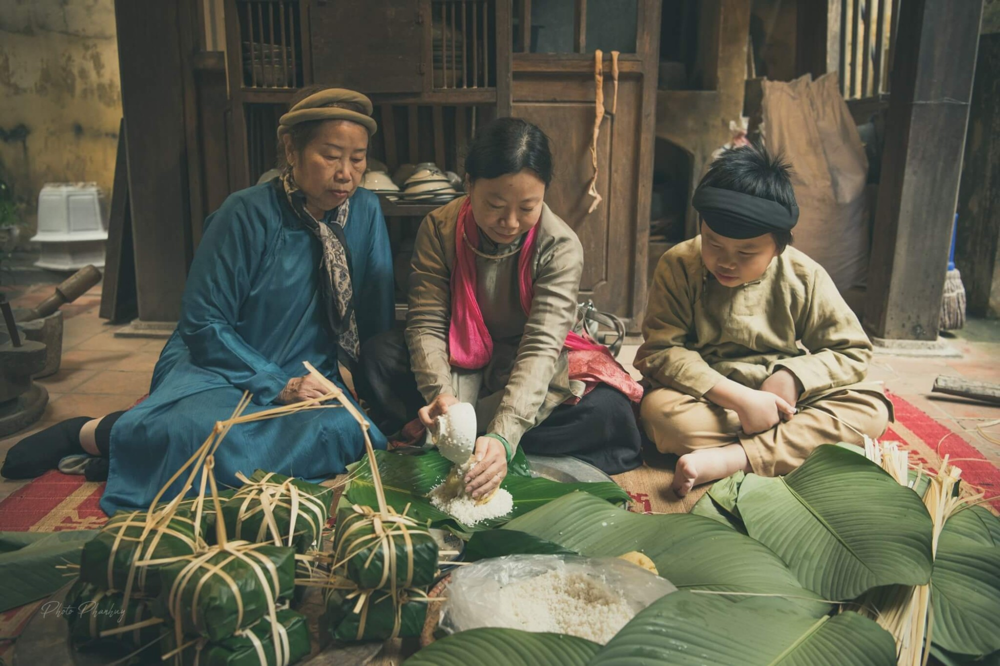
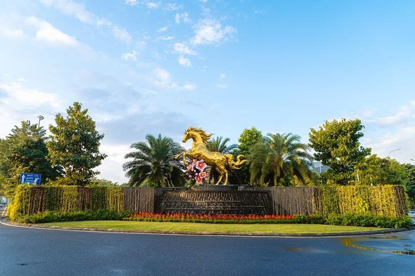
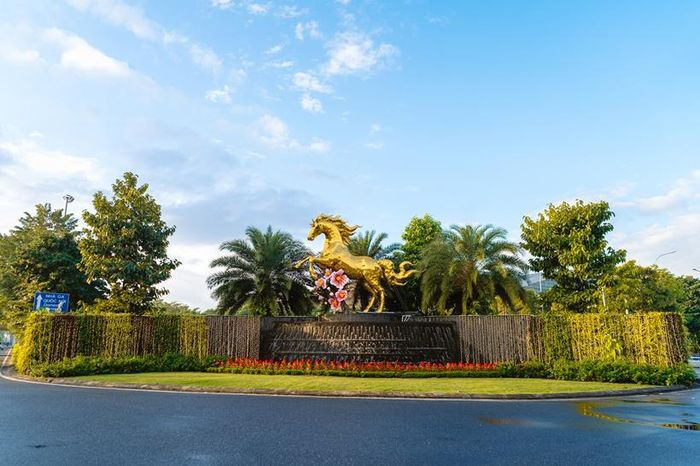

Mùng 3 Tết (19/2/2026 dương lịch) là ngày cuối cùng trong các ngày lễ chính của Tết Nguyên đán Bính Ngọ. Theo truyền thống Tết xưa của người Việt, sau 3 ngày Tết các gia đình sẽ làm một lễ cúng vào ngày mùng 3 Tết, đồng thời thực hiện lễ hóa vàng để tiễn đưa ông bà, tổ tiên về với âm cảnh.
Trong lễ này, phần đọc văn khấn là nghi thức không thể thiếu để bày tỏ lòng thành kính và biết ơn với bề trên. Bài viết dưới đây tổng hợp văn khấn mùng 3 Tết chuẩn phong tục Việt, giúp các gia đình có sự chuẩn bị chỉnh chu nhất khi thực hiện nghi lễ.
Theo phong tục từ bao đời nay, cứ vào chiều 30 Tết, người Việt làm lễ cúng tất niên, tức trình báo với ông bà tổ tiên đã hết năm cũ. Ngày mùng 1 là cúng Nguyên đán và tịch điện. Ngày mùng 2 sẽ cúng chiêu điện và tịch điện. Đến ngày mùng 3, gia đình sẽ cúng tạ ông vải — mang ý nghĩa 4 ngày Tết đã hết, con cháu làm lễ tiễn ông bà, tổ tiên trở về lại cõi âm.
Lễ cúng mùng 3 Tết hay còn gọi là lễ hóa vàng không chỉ dừng lại ở vật chất. Đây còn là lời tạ ơn chân thành của gia chủ gửi đến Thần linh, Thổ địa, Táo quân và tổ tiên đã về ăn Tết, sum vầy cùng con cháu, phù hộ độ trì cho gia đình một năm cũ bình an. Với quan niệm "trần sao âm vậy", mọi người luôn thành tâm thực hiện nghi lễ hóa vàng để hạ lễ, từ việc chuẩn bị các lễ vật cho đến bài văn khấn đầy đủ.
Mặc dù là ngày cuối cùng nhưng mùng 3 Tết vẫn không kém phần quan trọng so với những ngày Tết còn lại, đặc biệt là ở phần lễ cúng. Thời gian cúng tốt nhất là buổi sáng sớm hoặc trước 12 giờ trưa ngày mùng 3 để tiễn ông bà về âm phủ.
 Khai bút đầu năm là một phong tục đẹp thường được thực hiện vào những ngày đầu xuân. Đây là thời điểm con người gác lại những điều cũ của năm qua để hướng tới một khởi đầu mới với nhiều hi vọng. Đối với học sinh, thầy cô và những người yêu chữ nghĩa, việc viết những dòng chữ đầu tiên của năm mới mang ý nghĩa đặc biệt thiêng liêng.
Trước hết, khai bút đầu năm thể hiện tinh thần hiếu học và sự coi trọng tri thức. Những lời chúc, mục tiêu học tập hay câu danh ngôn được viết ra không chỉ là con chữ đơn thuần mà còn gửi gắm ước mơ, hoài bão. Hành động này tượng trưng cho sự mở đầu thuận lợi, nhắc nhở mỗi người phải nỗ lực, kiên trì để đạt được thành công trong học tập và cuộc sống.
Bên cạnh đó, khai bút đầu năm còn góp phần gìn giữ nét đẹp văn hóa truyền thống của dân tộc. Phong tục này giúp mỗi người sống chậm lại, suy nghĩ về mục tiêu của bản thân trong năm mới. Nhờ vậy, khai bút không chỉ mang ý nghĩa cầu mong may mắn mà còn khơi dậy quyết tâm phấn đấu và tinh thần trách nhiệm đối với tương lai.
Nguồn video: Báo lao động
Đi chùa đầu năm không phải hoạt động tham quan hay giải trí, mà là nét đẹp văn hóa truyền thống, giúp mỗi người hướng thiện, điều chỉnh tâm thế cho năm mới. Việc thực hành đúng nghi lễ, giữ tâm trong sáng và hiểu rõ giá trị tinh thần của việc lễ Phật sẽ giúp mọi người đón Xuân Bính Ngọ 2026 với sự an yên và nguồn năng lượng tích cực.
Theo chuyên gia phong thủy Phùng Gia, phong tục lễ chùa đầu năm sẽ có đôi chút khác biệt so với đi chùa vào ngày Rằm, mùng 1 hàng tháng. Đi chùa đầu năm là để cầu bình an, hướng thiện và nuôi dưỡng tâm an. Những ngày được xem là thuận lợi để cầu phúc ngoài 3 ngày Tết đầu năm còn có các ngày mùng 6, mùng 8, mùng 10 và Rằm tháng Giêng.
Theo quan điểm của nhà Phật, Phật chỉ phù hộ bình an chứ không thể phù hộ về tài lộc, công danh như ý muốn. Vì vậy, khi đi lễ nên cầu bình an cho bản thân và gia đình, cầu xin cần tránh Tam độc (tức Tham – Sân – Si) vì nếu tâm không tịnh thì đi chùa cũng thành vô nghĩa.

Khi đi lễ chùa đầu năm, lễ vật cần tuân thủ nguyên tắc thanh tịnh. Lễ vật nên chuẩn bị là các lễ chay như xôi, chè, oản, hoa quả,…; không mang những lễ vật mặn như thịt, giò, chả…
Lễ mặn chỉ được đặt tại ban thờ Thánh, Mẫu (nếu có) và không được dâng lên khu vực thờ Phật. Ngoài ra, không nên đốt quá nhiều vàng mã. Nếu có thì chỉ nên đặt một ít ở bàn thờ Thánh Mẫu hoặc Đức Ông. Nếu phát tâm công đức, hãy bỏ tiền vào hòm công đức.
Đền chùa là chốn linh thiêng, vì vậy trang phục cần tránh các trang phục hở hang, gợi cảm, sặc sỡ, không phù hợp. Thay vào đó, hãy chọn cho mình một bộ trang phục gọn gàng thanh lịch, có sắc màu nhã nhặn, phù hợp với sự trang nghiêm nơi cửa chùa.
Bên cạnh đó, quan niệm cho rằng khi vào chùa cũng cần chú ý đến nguyên tắc ra vào. Vào chùa nên vào ở bên tay phải, tức cửa Không quan. Ra khỏi chùa nên đi qua cửa bên tay trái là cửa Giả quan, mang ý nghĩa là sự vật đều biến hóa, vô thường, thể hiện quan điểm có sinh có diệt. Mọi người cần tránh đi cửa chính được xem là lối đi chỉ dành cho các bậc cao tăng để tỏ lòng kính trọng.
Khi vào chùa, nên dùng Phật danh "A di đà Phật" thay tên gọi để mở lời chào trụ trì và tăng ni trong chùa.
Quan trọng hơn hết, người đi lễ cần giữ tâm thanh tịnh, thành kính khi khấn nguyện. Chính sự chân thành mới là nền tảng tạo nên bình an trong những ngày đầu năm.
Nguồn video: HTV
Con cháu đến chúc Tết ông bà, thầy cô, người thân. Trẻ em nhận lì xì lấy may. Giúp tăng cường tình cảm gia đình và cộng đồng.
Nguồn video: Báo pháp luật TP HCM
Nguồn video: VTV24
Tết Nguyên Đán là ngày lễ truyền thống quan trọng nhất của người Việt Nam. Đây không chỉ là thời khắc chuyển giao giữa năm cũ và năm mới mà còn là dịp để mỗi người hướng về gia đình và cội nguồn. Trải qua thời gian, Tết đã có nhiều thay đổi phù hợp với nhịp sống hiện đại, song những giá trị cốt lõi vẫn được gìn giữ. So sánh Tết xưa và Tết nay giúp chúng ta hiểu rõ hơn sự vận động của đời sống xã hội cũng như ý nghĩa bền vững của ngày Tết.
 Trước hết, dù ở thời nào, Tết vẫn là dịp sum họp gia đình. Con cháu dù đi học hay làm ăn xa cũng cố gắng trở về nhà, cùng ăn bữa cơm tất niên và đón giao thừa trong không khí ấm áp. Gia đình luôn là trung tâm của ngày Tết. Bên cạnh đó, nhiều phong tục truyền thống vẫn được duy trì như thờ cúng tổ tiên, chúc Tết đầu năm, lì xì lấy may, hay chuẩn bị bánh chưng, bánh tét trên mâm cỗ. Tết cũng luôn mang ý nghĩa khởi đầu mới, gửi gắm ước mong về một năm bình an, hạnh phúc và thành công.
Tuy nhiên, giữa Tết xưa và Tết nay vẫn có những điểm khác biệt rõ rệt. Về cách chuẩn bị, ngày trước các gia đình thường tự gói bánh chưng, làm mứt, dọn dẹp nhà cửa kỹ lưỡng; không khí chuẩn bị kéo dài nhiều ngày, rộn ràng và đầy háo hức. Ngày nay, phần lớn thực phẩm được mua sẵn ở siêu thị, việc chuẩn bị nhanh chóng và tiện lợi hơn. Về đời sống vật chất, Tết xưa diễn ra trong điều kiện còn nhiều khó khăn; trẻ em mong Tết vì có quần áo mới và được ăn ngon. Còn Tết nay, đời sống đầy đủ hơn, những điều từng hiếm hoi đã trở nên quen thuộc.
Sự khác biệt còn thể hiện ở cách giao tiếp và hoạt động vui chơi. Nếu như Tết xưa, mọi người chủ yếu đến nhà nhau chúc Tết trực tiếp, tình làng nghĩa xóm gắn bó, thì ngày nay nhiều lời chúc được gửi qua điện thoại, mạng xã hội – thuận tiện nhưng đôi khi làm giảm bớt sự gặp gỡ trực tiếp. Về vui chơi, Tết xưa gắn với các trò chơi dân gian như kéo co, đánh đu, đấu vật, mang đậm không khí làng quê truyền thống. Tết nay lại đa dạng hơn với du lịch, xem phim, tham quan trung tâm thương mại, thể hiện sự hiện đại và phong phú của đời sống.
 

Tóm lại, Tết xưa giản dị, ấm áp và đậm chất truyền thống; Tết nay hiện đại, tiện nghi và nhiều lựa chọn hơn. Dù hình thức có thay đổi theo thời gian, giá trị quan trọng nhất của Tết vẫn không hề thay đổi: đó là sự sum họp gia đình, lòng biết ơn tổ tiên và niềm hy vọng về một năm mới tốt đẹp.